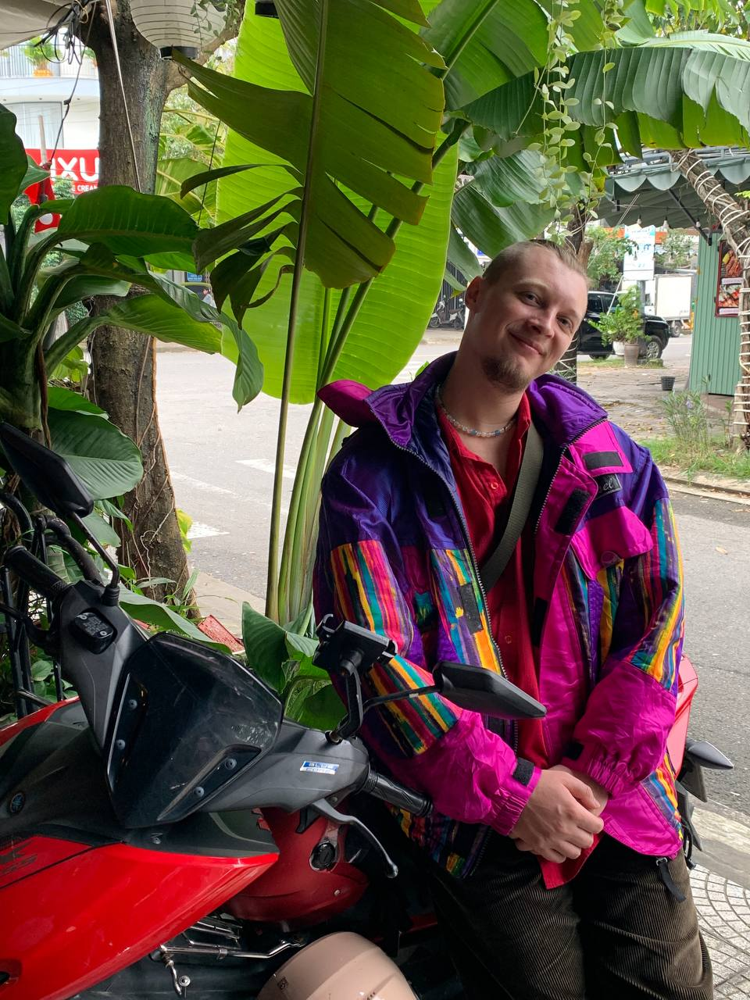

Меньше ручного труда — больше результата
- От идеи до системы — 2–4 недели
- Экономлю десятки часов команды каждый месяц
- Бэкграунд COO в 5 компаниях
На созвоне: разберём ваши процессы, найдём узкие места и предложу конкретные решения для автоматизации.
Нажмите на карточку, чтобы перейти к кейсу
AI-консультант для отдела продаж
Бот с базой знаний и CRM. Консультирует 24/7, квалифицирует лидов.
Личный AI-ассистент
Календарь, email, задачи, заметки, голосовые — один чат в Telegram.
Финансовый трекер
Учёт расходов в Telegram с автокатегоризацией и дашбордом.
Автовёрстка статей
Команда отправляет текст — получает страницу в стиле сайта. Без верстальщика.
SEO-пайплайн для статей
Полуавтоматический пайплайн: анализ выдачи, ТЗ, генерация из базы знаний.
Автоматизация холодного аутрича
AI-каскад: Email → LinkedIn → Telegram. Персонализация, follow-up, трекинг — автоматически.
AI-генератор контента для соцсетей
Голосовое сообщение → готовый пост в Telegram в стиле автора.
Автоматический новостной канал
Парсинг, оценка релевантности, перевод, автопубликация.

5 лет я строил процессы и управлял операционкой. Теперь автоматизирую её с помощью AI.
Не теоретик. Строил процессы и автоматизацию внутри реального бизнеса и своих проектов. Знаю, где бизнес теряет время и деньги — и как это убрать.
Теперь внедряю те же решения в клиентские проекты: убираю ручной труд, связываю сервисы и довожу процессы до работающей системы.
Когда пора автоматизировать
Хотим расти, но нет ресурсов на команду
Хотите больше трафика и лучше конверсию, но каждый дополнительный опытный сотрудник — от $1 500/мес. За автоматизацию платите один раз, дальше — небольшие расходы на поддержку.
Сотрудники заняты, но не тем, чем нужно
Операционка съедает большую часть времени — задачи по развитию откладываются, а стратегические инициативы не двигаются.
Все понимают, что это можно автоматизировать
Одни и те же действия каждый день: копировать, переносить, проверять, отправлять. Все понимают, что это можно автоматизировать, но нет времени и понимания как это сделать.
Что я делаю
AI-бот, который не теряет лидов
Отвечает клиентам мгновенно 24/7. Знает все товары и цены, использует ваши скрипты продаж и даже статьи из блога. Квалифицирует лидов и передаёт горячих.
Смотреть кейс →AI-продукт для привлечения аудитории
Полезные боты и мини-сервисы, которые привлекают аудиторию и собирают лиды. Например: бот для учёта тренировок, ведения финансов или изучения языка.
Смотреть кейс →Статьи, которые приводят клиентов
Автоматизация ускоряет производство в 4–8 раз: исследование, написание, верстку, SEO-оптимизацию.
Смотреть кейс →Личный AI-ассистент
Помнит встречи и задачи, ставит напоминания, пишет письма, фиксирует идеи, ведёт учет расходов — всё из одного чата, голосом.
Смотреть кейс →B2B-аутрич без шаблонных сообщений
Парсим контакты по ролям из LinkedIn, анализируем сайт компании и отправляем персонализированные касания: сначала Email, потом LinkedIn и другие каналы связи.
Смотреть кейс →Оцифровка бизнеса
Система собирает и анализирует ключевые метрики: конверсию рекламы, стоимость лида, эффективность звонков менеджеров и уведомляет, если показатели падают.
Интеграции с сервисами, которыми вы уже пользуетесь
Если вашего сервиса нет в списке, это не значит, что я с ним не работаю. Напишите — разберём задачу и посмотрим, реально ли интегрировать.
Мессенджеры
CRM
Данные
Коммуникации
Аналитика
Автоматизация
Платежи
+ интеграции с любыми сервисами через API
Как выглядит процесс на примере создания бота
От первого разговора до работающей системы — 2–4 недели
Вводный созвон и ТЗ
1–2 дняСмотрим внутреннюю существующую инфраструктуру, бизнес-процессы, составляем ТЗ, фиксируем цену и формат оплаты
Первый этап разработки
3 дняПоднимаем сервер, создаём базу знаний, подключаем бота в Telegram для тестирования
Тестирование
2–3 дняКоманда заказчика тестирует бота и даёт правки
Финальная настройка и сдача
2–3 дняПосле внесения всех правок подключаем остальные каналы связи (если нужно) и финально тестируем
Поддержка
1 месяцПосле сдачи я ещё месяц мониторю качество ответов и вношу правки в бота
Дальнейшее сотрудничество
При появлении новых задач можем перейти на парт-тайм или продолжить работать проектно, по необходимости
Форматы работы
Оплата возможна в рублях, тенге или криптовалюте
Консультация
Помогаю понять, где и как ИИ может упростить именно вашу работу. Работаю как с конкретными запросами, так и с общим аудитом ваших процессов для их оптимизации.
- Созвон на 1 час
- Анализ процессов и рекомендации
- Конкретный план внедрения
Проектная работа
Разовый проект с фиксированным ТЗ и стоимостью. Идеально, если нужно запустить конкретную систему — бота, пайплайн, автоматизацию.
- Фиксированная цена и сроки
- ТЗ до старта работы
- Результат — работающая система
Постоянное сопровождение
Part-time сотрудничество на 5–20 часов в неделю. Подходит, если задач много и нужен человек, который ведёт все AI-процессы.
- Поддержка и доработка систем
- Решение новых задач по мере роста
Частые вопросы
То, что обычно спрашивают перед стартом
Сколько стоит внедрение?
А что если AI будет отвечать ерунду?
Мы в России — какие есть ограничения по сервисам?
Что будет, если что-то сломается после запуска?
Мне нужно что-то понимать в AI?
Будут ли закрывающие документы?
Давайте обсудим ваш проект
Бесплатный созвон — 30 минут. Разберём процессы и найдём, где AI принесёт максимум пользы.
Кейсы
Реальные системы, которые уже запущены в работу
AI-консультант для отдела продаж
Бот для туркомпании: знает все туры, цены, даты. Отвечает клиентам в мессенджерах, квалифицирует лидов и передаёт горячих — менеджерам.
Личный AI-ассистент
Календарь, почта, задачи, заметки — всё через один чат в Telegram. Говоришь голосом — он делает.
SEO-пайплайн для статей
Полуавтоматический процесс: сбор семантики, написание из базы знаний, fact-check, автовёрстка.
Автовёрстка статей
Загружаешь текст — получаешь свёрстанную страницу в нужном стиле. 2 минуты вместо 1–3 часов.
Финансовый трекер
Пишешь «55 кофе» в Telegram — бот сам разбирает сумму, категорию, валюту и кладёт в дашборд.
Автоматизация холодного аутрича
AI-каскад через 3 канала: Email → LinkedIn → Telegram. Персонализация каждого сообщения, автоматические follow-up, трекинг ответов.
AI-генератор контента
Надиктовал мысль голосовым — получил готовый пост в своём стиле. Бот обучен на примерах автора.
Автоматический новостной канал
Парсит 15+ источников, AI оценивает релевантность, переводит и публикует в Telegram. Без редактора.